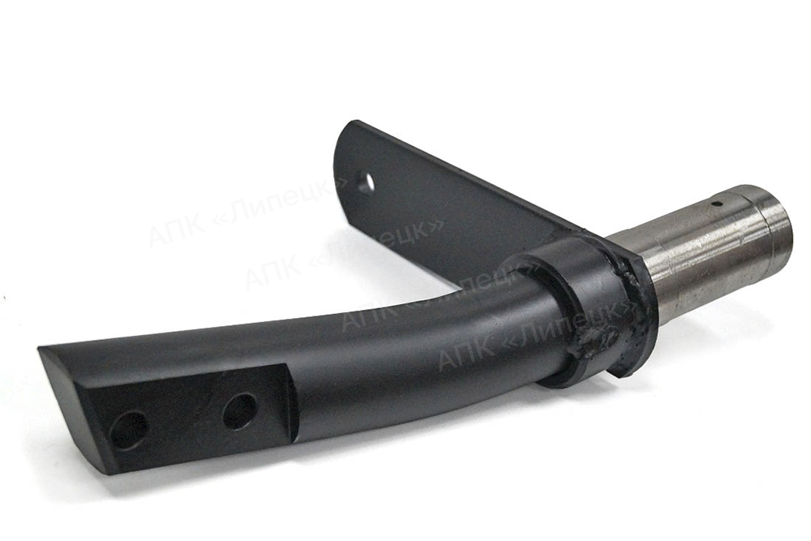

Стойка поворотная БДУ РУ-26 02 00 00.000

Стойка поворотная БДУ РУ-26 02 00 00.000
Производим в г. Липецке стойка поворотная РУ-26 02 00 00.000. Гарантируем высокое качество и выгодные цены. Работаем по всей России!
Стойка изготовлена из стального кругляка D=60 мм Ст. 45 посредством токарной обработки посадочного места с дальнейшей гибкой прессом.
- Применение
- Дисковые бороны БДУ «Булат» производства ПромАгро. Стойка применяется с подшипниковым узлом ПУ-9 00 00 00.000
- Вес
- 10,5 кг
Производство подшипниковых узлов и стоек для дисковых борон
Ремонт и производство карданных валов
Ремонт катков почвообрабатывающих орудий
ООО АПК «Липецк»,
+7 920 500-70-05
Пн-Пт c 8:00 до 17:00
Россия, 398902, г. Липецк, ул. Ударников, 38В
gagarin.r0301@mail.ru